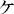
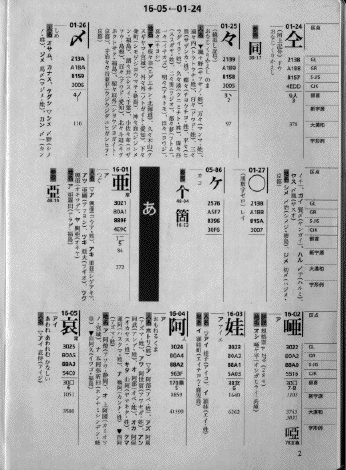
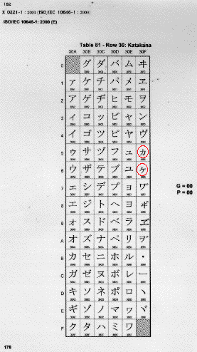
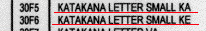
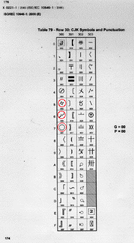
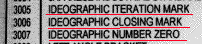
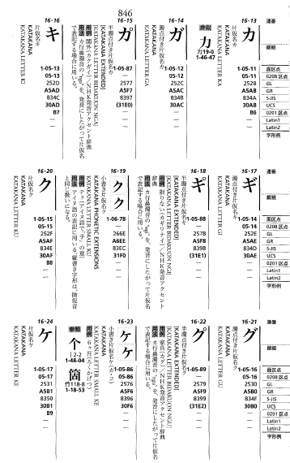

「」のように見える文字の入力について
――青空文庫のいわゆる「ケヶ問題」――
2007年3月19日 作成
2007年4月3日 「区点番号5-17と5-86の使い分け指針」にリンクし、誤字を訂正しました。
2008年3月9日 「増補改訂JIS漢字字典」の、5-86と5-17が記載されているページ画像を組み込み、これに関連する文言を、追記しました。
2012年1月17日 「区点番号5-17と5-86の使い分け指針」のURLの変更を受けて、導入部を改めました。
2012年2月3日 「――青空文庫のいわゆる「ケヶ問題」――」を、副題として加えました。
富田倫生
「」のような形の、二つの文字のテキスト化について、青空文庫は、「区点番号5-17と5-86の使い分け指針」を設けています。
これに変更提案が寄せられ、どう扱うかの議論が長引く中で、「ケヶ問題」という言葉まで生まれました。
ここでは、「方針の変更は必要ない」という立場から、この文字の入力に関わる事項が、青空文庫で使うことにしている文字コード（以下の引用文中では、「符号化文字集合」などとも書いています。） JIS X 0208 では、どのように定められているか、あるいは定められていないかをメモしてみます。
▼非常に形の似通った異なる文字を、区別するか否か。
▼非常に形の似通った異なった文字を、どう符号化するか。
▼「こ」「か」「が」と読む「」のように見える文字は何か。
▼問題のその字を、どう入力するか。
▼包摂に関わる困難。
▼わからないこと。
▼非常に形の似通った異なる文字を、区別するか否か。
JIS X 0208:1997 解説 3.7.3.5.1(一意の符号化の要請)には、「符号化文字集合は，“文字は，一意に符号化されねばならない”(unique encoding）を前提にしている。」とあります。
「非常に似通っていても、違った文字であれば、文字コード上でも区別してあつかえるようになっていなければならない。」が、規格の基本的な立場だろうと思います。
だからこそ、この規格では形の上では区別できないラテン・アルファベットの「Ａ」と、ギリシア・アルファベットの「Α」、キリール・アルファベットの「А」が別々の区点位置を、与えられています。
また、「区別できなければならない。」という要請があるからこそ、1997の改訂時には、漢字の類型異字が区別できなくなっている状況を回避するために、「“芸”が“ゲイ”であって“ウン”ではないことを規定しては」とする意見が示されたと言います。（JIS X 0208:1997 解説 3.7.3.5.5）（「芸」の区点位置は、23-61。ここには「芸」という図形文字が、例示字体として掲げられていますが、この形をとる漢字には、「芸《げい》」に加えて、「芸《うん》」という別の字があるそうです。二つの漢字が、一つの区点位置に「同居」していて、「それは一意の符号化という観点からは問題がある。何とか区別できるようにしよう。」という検討が行われたわけですね。）
ただし、そうすることには、規格票391頁に列挙された問題点と困難があるので、「区別できなければならない。」という基本的な要請はあるのだけれど、6335字の漢字に関しては、「類型異字が衝突する場合は，それらを同一区点に包摂している。」という立場をとることにした、と私には読めます。（JIS X 0208:1997 解説 3.7.3.5.6）
「芸《げい》」と「芸《うん》」という異なった漢字が同一区点位置を与えられた状態のままとされたのは、そのためです。
JIS X 0208:1997 解説 3.7.3.1 には、確かに「文字コードは，言語として世に存在する図形文字とそのビット組合せとの対応をあいまいなく規定するだけ」であり「“文字概念”の符号化」を規定したものではないとの記述があります。
ただ、同じ箇所には「しかし，符号化対象の図形文字に関しては，あいまいなく識別できることが必要」ともあります。
文字概念を符号化してはいないけれど、文字概念の異なる似通った文字は、区別できなければいけない。
だからこそ、「図形文字の同定では，用字系(script)の区別が重要」（JIS X 0208:1997 解説 3.7.2）とされているのであり、異なった用字系に「Ａ」と「Α」と「А」の三つを定義するといったことが行われているのだと思います。
1997の改訂以前、漢数字の「〇」は、「漢数字ゼロ」という名称を与えられながら、記述記号に分類されていました。
「記号か漢字か、どっちやねん。」という状態です。
1997で、「〇」は、新設された「仮名又は漢字に準じるもの」のグループに移されます。
この措置は、「容易に発見できるよう」（JIS X 0208:1997 解説 3.7.2）という意味もあったでしょうが、それまで「〇」を漢字だといいながら、記述記号に置いてきた、用字系認識の混乱を解消する上で、必須なものだったように、私には思えます。
「漢字を、本来置くべきでない記述記号に分類することによって生じる見つけにくさは、文字コードの本質に関わる深刻なものである。」とでも言えばよいでしょうか。
JIS X 0208:1997は、制定時から数えれば、第四次の規格となります。
第四次規格をまとめたグループは、過去の第二次規格、第三次規格のまとめに際して、字体、字形の変更が行われ、結果として、その後の運用に大きな混乱をきたしたことに批判的でした。
第一次規格に、誤りから紛れ込んだと思われる、「文字概念を符号化してある。」と読まれかねない記述は、「ならば、文字概念とビット組合せは変更せず、その字体、字形だけを変更することはかまわないだろう。」との解釈を生んだと、グループは考えました。
こうした解釈とそれに基づく変更を論理的に批判し、事態の再発を防止する上では、「文字概念を符号化したものではない。」と強調することは、必須だったと思います。
事実、漢字に関しては、「この字は漢字である。」以上の、「漢字のどの字か」に関する情報は、規格本体としては与えられていません。示されているのは、規格本体としては、形だけです。
ただ、個々の区点位置は、形の情報に加えて、それは何の文字であるかという情報も与えられなければならず、事実与えられている（漢字に関しても、漢字であるとわかる。）という事実は、揺らがないと私は思います。
▼非常に形の似通った異なった文字を、どう符号化するか。
文字を入力するとき、私たちは本質的に、どんな作業をしているのでしょうか？
まずは、符号化する文字の、用字系を吟味するでしょう。
前後の文章の流れから、片仮名の「ヘ」か平仮名の「へ」かを見きわめるといった、作業です。（もちろん、普段は「何をしているか」など意識せずにやっているわけですが。）
用字系が判断できれば、文字コードの「これ」と思ったグループに、似通った字体の例示された区点位置がないか、探します。
あれば、その区点位置で符号化できます。
例示字体とは、形に多少の異なりがあっても、その区点位置に包摂されることが明示されていれば、その区点位置で符号化できます。
たとえば「區鳥」は、「過去の規格との互換性を維持するための包摂規準」を根拠として、「鴎」が例示された区点位置で符号化できます。
では、判定した用字系の中に、同一、もしくは包摂される字体がなければ、どうでしょうか？
JIS X 0208:1997 は、漢字の字体の包摂規準を規格本体に組み入れています。
よって漢字の場合、同一、もしくは包摂される字体が漢字集合になければ、符号化できないと判断されるでしょう。（後に触れる事情があるので、「仮名又は漢字に準じるもの」も見ておいた方がいいですね。：2007/3/23追記）
非漢字の場合は、どうでしょうか？
JIS X 0208:1997 は、非漢字の包摂規準を明示していません。
判定した用字系に似通っていると思える例示字体がみつからなければ、「念のため」という意味も込めて、規格全体を見渡してみたくなります。
規格全体を見渡しても、似通っていると思える例示字体がみつからなければ、符号化できないとあきらめがつくでしょう。
では、異なった用字系に、似通っていると思える例示字体がみつかった場合は、どうでしょう？
たとえば、二重ハイフンです。
二重ハイフン（分類するとすれば、多分、記述記号になるのでしょう。）という名前の記号は、JIS X 0208:1997 にはありません。
ただ、「＝」（等号、学術記号）の例示字体は、二重ハイフンと似通っています。
文字は一意に符号化されなければならなくて、「…どの符号化文字集合（符号）を使うかが決まっていれば，ある文字がその符号の中で表現できるか否か，できるとしたら，どのビット組合せで表現されるかについて，判断が分かれるようであってはならない。」（JIS X 0208:1997 解説 3.7.3.5.1）という以上、似通った字体が学術記号の等号にしかないのだから、二重ハイフンは「符号化できない」という結論になるのかなと、まずは思います。
ただ、JIS X 0208:1997 解説 3.7.3.3 には、「なお，漢字以外の記号類などの包摂規準も必要ではないかとの意見があった。確かに，ダブルハイフンがこの規格の01-65(＝，イコール)で表現できるか否か，…などは，十分に明確であるとはいえない。」と、表現できる可能性に含みをもたせた書き方になっている気がします。
とすると、包摂規準の明示されていないものに関しては、事実、そのように使われていれば、そのように使われたと受けとめるということで良いのかもしれません。
青空文庫の作業を想定すれば、二重ハイフンは等号の区点位置で符号化することにしようと申し合わせ、内外に告知して「＝」で入力する。
あるいはしないことにしようと申し合わせて、「※［＃二重ハイフン、1-3-91］」と入力するという、どちらを選んでも良いのではないかという気がします。
どちらでも良いのであれば、「符号化することにしよう。」を選んだ方が諸々、簡便なので、そちらが良さそうに思います。
御指摘のあった「×」は、学術記号の乗算記号とされているので、バッ点は「×」で良いことにしようと、申し合わせて使用。
これは後の検討につながっていきますが、JIS X 0208:1997 では、「ヵ」は片仮名とされているので、ものを数える際に用いられる、片仮名のカを小書きしたような文字も、「ヵ」で入力すると申し合わせて使用で、良いのではないかと思います。（そんな申し合わせは必要ではないというお考えもあるだろうことは、承知しています。）
▼「こ」「か」「が」と読む「」のように見える文字は何か。
では、問題の「」のように見える文字をどう入力するかに移っていきましょう。
まず、この字は何者であるのかという点から、確認します。
「区点番号5-17と5-86の使い分け指針」で述べているとおり、「」は、「个」から生まれた、片仮名のケとは源を異にする文字です。
その文字がどのように使われ、今に至っているかを確認するために、上記「指針」の検討段階で参考図書を調べ、「指針」にも「参考」としていくつかの記述を並べています。
「広辞苑」は、「」の起こりにそった定義を採用しています。
「」は「」である、という立場です。
「言葉に関する問答集」は、「一般に、片仮名の「ケ」を書いて「カ」または「ガ」と読むのだと意識されているが、本来はそうではない。」、「个」から起こったものが符号的に用いられてきた、としています。
「ケ」と意識されることが多いが、「」として使われてきた、という立場です。
「日本国語大辞典」は、「もともと「箇」の略体「个」から出たもので、かたかなとは起源を異にするが、字形としては区別はなくなっている。」とし、「片仮名の「ケ」を、物を数える「一カ年・一コ」の「箇」に代用することがあ」るともしています。
「」と「ケ」の関係に絞れば、三つはともに、「両者は起源を異にする二つの文字だが、字形上の区別はなくなっている。」という認識の範囲に収まっているのではないかと思います。
ただし、「片仮名の「ケ」を、物を数える「一カ年・一コ」の「箇」に代用することがあり、近来は「一ケ・二ケ」等を、「イッケ・ニケ」等とよむようにもなった。」とする、「日本国語大辞典」の記述は、上記の枠組みからさらに一歩、踏み出しているように思えます。
「指針」に向けて検討を行っている際も、この踏み出している点をどう考えるかが問題になりました。
結論的には、「日本国語大辞典」はそういうけれど、「「一・二」等を、「イッケ・ニケ」等とよむ」という用例は、日本語として定着するに到っていない誤りと、ここでは考えよう。」ということになりました。
「両者は起源を異にする二つの文字だが、字形上の区別はなくなっている。」というのが、「指針」を決める際に、我々が選択した立場だったと思います。
「日本国語大辞典」が採用している「代用」という概念は、その当時調べた参考図書の中では、ここだけに見られるものだったと思います。
「イッケ・ニケ」が、日本語として定着していると読める記述も独自です。
それ以外がとっている、字形上区別されない異なった文字（ラテン・アルファベットの「Ａ」と、ギリシア・アルファベットの「Α」、キリール・アルファベットの「А」のような関係）とだけ言ってそこで立ち止まっておくのが、無理のない自然な認識と、当時の我々は受けとめたのだと思います。
ただ、決める際にはそう考えたけれど、あらためて見直して「妥当でない」と明らかになれば、異なった立場で考えをそろえ直す必要があるでしょう。
そこでしばらく、考えてみました。
頭の中で転がしてみると、私自身は「イッケ、ニケ」という読み方にいつも、「誤用感」もしくは「おかしみ」を覚えます。
「それは、イッコ、ニコと読むんだよ。」とたしなめたくなる気持ち、あるいは「わざとそんなふうに読んで、笑いなり、なごみなりをもたらそうとしているのだな。」といった感覚です。
こうした「ズレ」の感覚は、日本語として定着していないからこそ、生じる気がしてなりません。
もちろん、新しい言葉の変化に、年をとったものが置いていかれるということはあるでしょう。
ただ、「イッケ・ニケ」といった読み方が、若い世代を中心に台頭してきているとは、私には思えません。
「両者は起源を異にする二つの文字だが、字形上の区別はなくなっている。」、もう一言書き添えれば、「字形上の区別はなくなっているけれど、両者は異なった文字である。」という立場を変更した方がよいとは、私には思えません。
▼問題のその字を、どう入力するか。
青空文庫の作業に関わる多くの方が、それまでは問題の字を、なんとなく片仮名のように思ってきたと思います。
その字の取り扱いを検討する必要があって確認する中で、これは片仮名ではない、別の字であるとの認識に触れました。
私自身、そうした知識を得て初めて、この字を「こ、か、が」と読み分けることに納得がいきました。
「なるほどそうか。わかった。」という感じです。
以降私の中では、「」と「ケ」は、はっきりと分かれて、にじむことがありません。
今後も決して、にじまないでしょう。
検討過程では、「个」に由来する文字は、さまざまな大きさにつくりわけられることも確認しました。
大きくは、「大／小」に振り分けられるものの、「中」としか言いようのないパターンもありました。
さまざまな用例を確認しましたが、問題の字が「大きさによって異なった意味を表す。」といった傾向は見えず、そうした認識が合意を得ることは、ありませんでした。
「「」は、「こ、か、が」と読む、「个」に由来する文字で、この字はさまざまな大きさに作られる。」というのが、我々の選んだ立場です。
では、この文字を JIS X 0208:1997 で、どう入力するかに移っていきましょう。
底本にある「」を、「片仮名ではない「个」に由来する文字と読もう」と決めのであれば、我々はその字の用字系の候補として、「漢字」もしくは「仮名または漢字に準じるもの」に絞るのが妥当でしょう。
ところが当該箇所を探しても、「」のような例示字体が見つかりません。
念のために、規格全体を見渡してみると、「片仮名」という筋違いの用字系に、「ケ」と「ヶ」という、「」に似た例示字体が、二つ見つかりました。
一意の符号化という観点からは、用字系が違っている以上、「」は、JIS X 0208:1997 では符号化できないと考えるのが筋かも知れません。
ただ、そんなふうに手を縛ると、なにかと簡便さを欠くことになります。
そこで、「」を符号化する区点位置を申し合わせて、内外に告知し、青空文庫の全ファイルで扱いを通すことを目指しました。
（より正確に書けば、当初は「筋違い」に関する懸念はもっとうすく、「」を符号化する「正しい」区点位置を確認するという意識が、話し合いに加わった者の中で強かったと思います。その後、この問題が何度か再検討される中で、「基本的には両方筋違いなんだ」という感覚が、私の中ではより強まりました。ここまでメモしてきたことを読み直して、そうした変化後の意識に基づいて、体験を読み替えながら再整理していると感じました。）
候補となりそうなのは、筋違い用字系の「ケ」と「ヶ」です。
ここで、このメモの冒頭に掲げた、「一意の符号化」を再確認したいと思います。
「」はさまざまな大きさにつくられるけれど、大小（大中小？）で意味が変わることのない、ある一つの文字です。
その文字を符号化する区点位置は、「一意の符号化」を受け入れる以上、一つでなければいけないでしょう。
組み版上「大きくつくってあるときはあっち」、「小さくつくってあるときはあっち」、「中間的なときは、あっちにしよう」と、一つの文字を異なった区点位置で符号化したのでは、「一意」がなりたちません。
では、「ケ」と「ヶ」という二つの候補の中から、どちらを選ぶのが、よりましな選択（現在の意識）、もしくは妥当（当時の意識）な選択でしょう？
そこで我々が参考にしたのが、JIS X 0208:1997 の規格票に盛り込まれた、いくつかの手がかりです。
この規格票には、漢字を対象にした索引が付いています。（これ自体は、「規定の一部ではない。」という扱いです。）
その音訓索引の「カ」という読みのところに、「ヶ(05-86)」が組み込まれています。
仮名が、特定の一つの音を表すものであるとすれば、「け」と読まれるはずのものに、「か」の読みを付すのは奇妙です。
漢字を対象とした索引に盛り込まれているということからも、「ヶ(05-86)」を仮名扱いしていないのではないか、との推測が成り立ちそうです。
「JIS X 0208:1997 解説 3.14 部首・画数及び音訓索引(附属書11)」には、なぜこの字に「か」の読みを設定したかに関する、以下のような説明がありました。
本体6.5.2及び附属書4で“仮名又は漢字に準じるもの”とされている区点位置に，音訓を設定して検索できるようにしたものがある。次の5区点位置である。
01-24 （仝） おなじ，ドウ，くりかえし
01-25 （々） おなじ，くりかえし，のま
01-26 （〆） しめ
01-27 （〇） ぜろ，レイ
05-86 （ヶ） カ
これらは，他の漢字と全く異なる所に配置されていて検索しにくいため，この規格で表現できないと誤って判断される例が少なくない(例えば，JIS X 0212-1990)“補助漢字”は“〆”を16-17に改めて掲載している)。このため，検索を容易にするために，あえて音訓を設定することにした。」
こうした記述を手がかりとして、私たちは「」を符号化する区点位置を、5-86にすることにしようと、申し合わせました。
規格票から離れて、JIS X 0208:1997 の改訂作業の中心となった人たちが編んだ「JIS漢字字典」という参考図書を見てみましょう。
序文には、以下のように同書の成り立ちが説明されています。
この字典は、JIS X 0208:1997 の規格改正作業において、主として言語学的立場から協力した池田証壽(北海道大学)、笹原宏之(国立国語研究所)、豊島正之(東京外国語大学アジア・アフリカ言語文化研究所・幹事兼エディタ)の三名と主査の芝野耕司(東京国際大学)が、規格改正作業用に用いた基礎データと関連データをもとに、新たに整理・検討して本文を作成した。
この字典には、「JIS X 0208:1997 に収録した六、三五五文字の漢字に加えて、一般に漢字とみなされることの多い」、5文字が採用されています。
追加された5文字は、字典本文の冒頭に、以下のように配置されています。

「指針」が規格票の手がかりから選んだ、「「」を符号化する区点位置は5-86にしよう。」とする立場は、「JIS漢字字典」が示した、5-86の（本来の）用字系認識（＝漢字）にそったものです。（「JIS漢字字典」は、JIS X 0213の制定の後に改版され、2002年5月31日に「増補改訂JIS漢字字典」として再刊されました。同書における5-86の記載状況を、このファイルの末尾に示します。）
最後に、5-86をめぐる規格票の手がかりには、明らかにおかしなとことがあることを、確認しておきたいと思います。
上に引いた「解説 3.14」で示された五つの区点位置の内、「ヶ」をのぞく四つは、改訂以前は「記述記号」に配置されていました。
そして1997で、新設された“仮名又は漢字に準じるもの”に移されました。
ところが、先に確認したとおり、「ヶ」は1997においても、「片仮名」におかれたままとされているのです。
「解説 3.14」で、これら五つは“仮名又は漢字に準じるもの”に属すると説明し、「JIS漢字字典」でも、同様の扱いにしているのに、なぜ、「ヶ」だけは、実際には移されなかったのでしょう。
「JIS X 0208:1997 6.5.2 漢字集合中の図形文字の種類 e) 片仮名 参考」にあるように「小書きの“ヶ”は，本来は漢字であるが，ここでは片仮名の小文字として扱う。」ことにされ、片仮名グループに留め置かれたのでしょうか？
規格票にはその経緯に関する説明は、ないように思います。
他でも、この意志決定に関わった方々からの説明に、私はまだ、触れていません。
よってここは、推測するしかありません。
「KATAKANA LETTER SMAALL KE」と、名前に用字系「片仮名」を組み込んでしまっていること。
Unicode でも、JIS X 0208 での扱いにそって、「Katakana」グループに属するものとされており、JIS X 0208 で片仮名扱いをやめれば、Unicode の修正が求められそうなこと。
必要な段取りを踏んで Unicode を変更できたとしても、普及には、OS 側の対応という、次の時間のかかる工程を踏まなければならないこと。
さらに、Unicode の国内規格である JIS X 0221 も直さなければならないと、きわめて広い範囲に及ぶ、玉突き状の連鎖的修正を迫られそうなこと、等が懸念されたのではないかと想像します。（以下に、JIS X 0221 規格票における、「ヶ」の扱いを示します。）


ちなみに、「仝」は Unicode では、もともと CJK 統合漢字に入っているので（コード番号は、4EDD）、JIS X 0208:1997 で分類を変えても、玉突き変更の必要は生じなかったはずです。
「々」「〆」「〇」は、以下のように CJK Symbols and Punctuation というところに置かれているので、これも JIS X 0208:1997 での分類変更に際して、玉突きへの懸念がなかったものと思われます。


「ヶ」も「仮名または漢字に準じるもの」に移せればとは思えども、国際規格やコンピューターへの実装との兼ね合いを考えれば、断念（と私は推測しているわけですが。）以外、現実的な選択はなかったんでしょう、多分。
ただ、その制約の中で、当該箇所だけを取り出せば明らかに誤っている「解説 3.14」を書き、読みを設定してくれたことで、「こ、か、が」と読む、「」のような文字の符号化を申し合わせる際の導きを、規格票自体から得ることができたというのが、私の受け止めです。
ただし、「ヶ」（加えて「ヵ」）を片仮名にとどめたことによって、問題も残されました。
この用字系には、「ケ」という文字が存在します。
そのために、「ヶ」は大／中／小といろいろにつくられ、それらさまざまなパターンは、「ヶ」に包摂されるという本来のあり方を、規格として主張できなくなりました。
大小問題が、解決できない課題として残ったのです。
よって、「こ、か、が」と読む、「」のような文字の符号化には、いつまでも落ち着かない感じがつきまとい、青空文庫が採用した申し合わせに対しても、繰り返し批判や修正要求が寄せられると思います。
けれど、JIS X 0208:1997 を使って、底本に忠実な電子翻刻を不特定多数の協力によって目指すとすれば、「こ、か、が」と読む「」のような文字が何であるかの認識をまず揃え、それをどう符号化するかを申し合わせることが、やはりどうしても必要です。
文字認識のずれをかかえたままでは、その文字の符号化方針に対して個々のケースで意見がぶつかったとき、調整のしようがありません。
「広辞苑」「言葉に関する問答集」と、「日本国語大辞典」（の記述の一部）の対立を残したままでは、共同作業が成り立たないのです。
そうした要請に基づいて選択した現行の方針は、文字認識の妥当性においても、一意の符号化を行うという文字コードに対する基本的な要請にそうという意味でも、また JIS X 0208:1997 が示してくれた苦しい示唆にも適っているという点でも、一つの考え方だと私は思います。
だから、これを変更する必要はないんじゃないかと思っているわけです。
ただ、こうした「筋道を通そう。」とする姿勢が、事実、作業上の困難やファイルの読みにくさを強いているのであれば、理屈は理屈として、別の道を選ぶことも必要かも知れません。
ですが、作業の地均しや意見の調整役をここまでつとめてきて、この作業方針に由来して、個別のケースで大きな問題が生じたり、対立する見解の落としどころが見つけられなくなったといったことは、少なくともこれまでのところ、体験していません。
▼包摂に関わる困難。
包摂される字体同士を比較するような文章のテキスト化は、御指摘のように大変困難です。
たとえば「過去の規格との互換性を維持するための包摂規準」を説明する文章を入力しようとすれば、注記等の何らかの工夫が不可欠で、仕上がったものは、読みにくいでしょう。
この small talk でも、「區鳥」といった手を使っています。
ただそれは、包摂が必然的に強いる限界です。
サイズの大小は、この区点位置で包摂されるという受け止めにしよう、と申し合わせた文字でも、同様の事が起こります。
であるからといって、包摂を拒否することもできません。
また、申し合わせに到る理屈の筋道を外れて、一意の符号化に反する道を選ぶことも妥当とは思えません。
作業方針は方針として定める。
その上で、方針そのままの適用では読みにくくてしょうがないといったケースに実際に出合ったら、「區鳥」のような例外的な特殊技法の採用を、当該作品に限って検討しても良いのではないでしょうか？
▼わからないこと。
以下については、よくわかりません。
・冕ゲ嶽
この表記、歴史的な文書にあるとか、遺構に刻まれているとかするんでしょうか？
なにも判断材料のないところでぼんやり想像すれば、「べんがだけ」が地名のようだから、「こ、か、が」と読む「」に濁点が付いたものなのかな。
もしそうであれば、そういう字は JIS X 0208:1997 にはないので、外字注記するのでしょうか。
「が」と読む「ゲ」が、複数の作家の複数の作品に何度か現れるというのであれば、「申し合わせて「ゲ」で」ということも考えられそう。
・「ヵ」の扱い。
「ヶ」の代わりをしているように見える「ヵ」（たとえば、「一ヵ所」）を、「ヶ」同様の漢字に準じる文字と読む人がいたとすると、JIS X 0208 で片仮名のグループに入れられている「ヵ」で符号化してしまってよいのか、とまどうかもしれません。（私かな。）
これも、「ヵ」で入れると申し合わせたとして、同様の箇所に「カ」が現れた場合（「一カ所」とか。）、これはいったい何なのか？
「ヶ」同様、「ヵ」はさまざまなサイズに作られるのだと見るべきか。
それとも、片仮名の「カ」と見るべきなのか。
「一カ所」といった語句だけを取り出してみれば、どちらの解釈にも無理はないように思え、おまけにこのケースでは「こ、か、が」と読むものは、といった手が使えません。
符号化対象が「なんの字であるか」を読むことが、このケースでは、実に困難じゃないかという気がします。
朝日新聞では、本文は「６カ国協議」、ゴシックの見出しでは「６ヵ国協議」となっており、大小包摂を主張しているように見えます。
「ヶ」代行にみえる片仮名の「カ」のような文字は、「ヵ」で入力して、大小を注記せよと、誘われているみたい。
ただ、片仮名の「カ」を用いた「６カ国協議」があってもちっともおかしくないので、そうした作業方針の申し合わせは難しいでしょう。
何もなかったように、小さいのだけ「ヵ」で入れておくのが無難なのかと思えど、「錦カ浦」のようなものが出てきたら、これはいったいどうするのか。
「ヵ」で入力して、大振りにつくってあると注記するのが筋ではないかという気が、どうしてもしてしまいます。
「ヵ」は「ヶ」よりさらにたちが悪い気がしてなりません。
【補遺】
「JIS漢字字典」は、JIS X 0213の制定の後に改版され、2002年5月31日に「増補改訂JIS漢字字典」として再刊されました。
初版が、漢字と、「一般に漢字と見なされることの多い」5文字（「仝」「々」「〆」「〇」「ヶ」）だけを収録していたのに対し、増補改訂版は、JIS X 0213に規定された全ての文字を収録する形にあらためられました。片仮名グループに留め置かれた5-86の「ヶ」は、5-17の「ケ」と並んで記載されています。

5-86には、「カ・コ」という読みと、「6ヶ月」という用例と、「个」、「箇」という、参照すべき漢字の区点位置が添えられています。
一方、5-17には、読みも用例も参照区点も記載されていません。